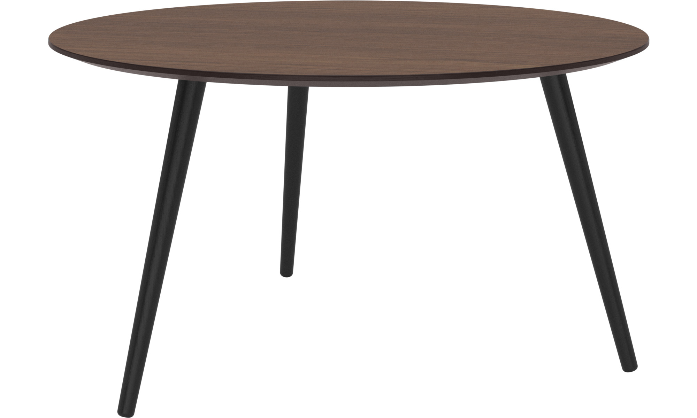
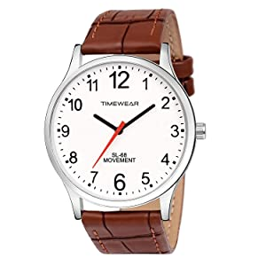

Test Image - 
Ouput on Microsoft Azure- table
Ouput on MobileNet Model- foalding chair
Result -
Microsoft Azure is more accurate
Test Image - 
Ouput on Microsoft Azure- clock
Ouput on MobileNet Model- analog clock
Result -
MobileNet Model is more accurate
Test Image - 
Ouput on Microsoft Azure- footwear
Ouput on MobileNet Model- running shoe
Result -
MobileNet Model is more accurate
Test Image - 
Ouput on Microsoft Azure- Indoor
Ouput on MobileNet Model- hair spray
Result -
none of them are close to being accurate